01
Vie · 31 jul
Madrid → Mazagón
Unas seis horas de viaje y aterrizaje suave: piscina y la playa abierta de Mazagón para estirar las piernas.
● Albaida Nature · Mazagón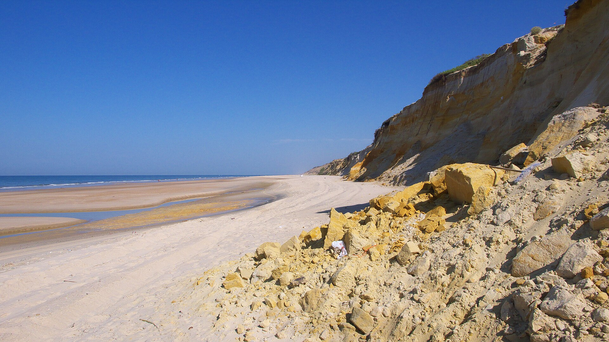
Dos viajes encadenados por una misma carretera: ocho días los tres por Huelva, terminando con una subida tranquila hacia el norte, y después una semana en familia en Suances.
Cada parada lleva su botón de anotación: pulsa “Anotar” para dejar comentarios sobre ese día concreto.
Unas seis horas de viaje y aterrizaje suave: piscina y la playa abierta de Mazagón para estirar las piernas.
● Albaida Nature · MazagónPasarela de madera sobre los acantilados del Asperillo y dunas enormes. Sin servicios: ir temprano y llevar agua y sombra.
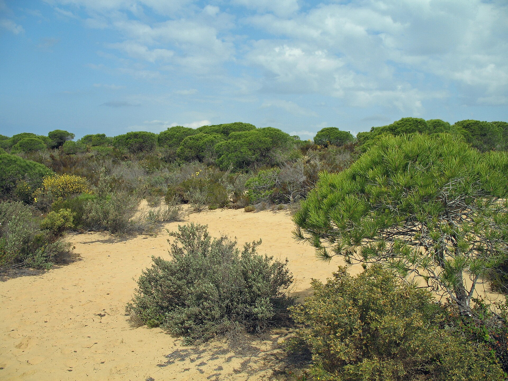
La playa desierta de verdad: una lengua de arena a la que solo se llega cruzando en barco.
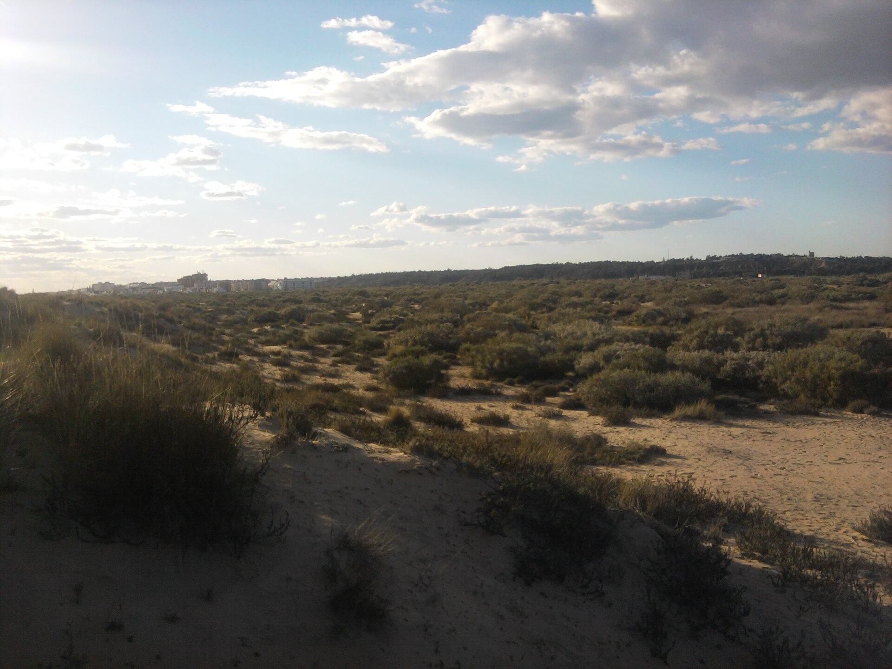
El Muelle de las Carabelas, donde te subes a las réplicas de la Santa María, la Pinta y la Niña. La Rábida y Moguer. Tarde de playa.
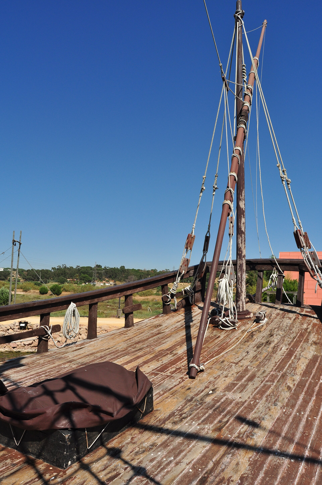
Check-out y una hora escasa hasta la marisma. Tarde de piscina y primer atardecer de aves en el lodge.
● Ardea Purpurea · VillamanriqueRuta norte desde El Rocío entre pinares y marismas, el Palacio del Acebrón y la aldea. Con suerte, ciervos y aves a manta.
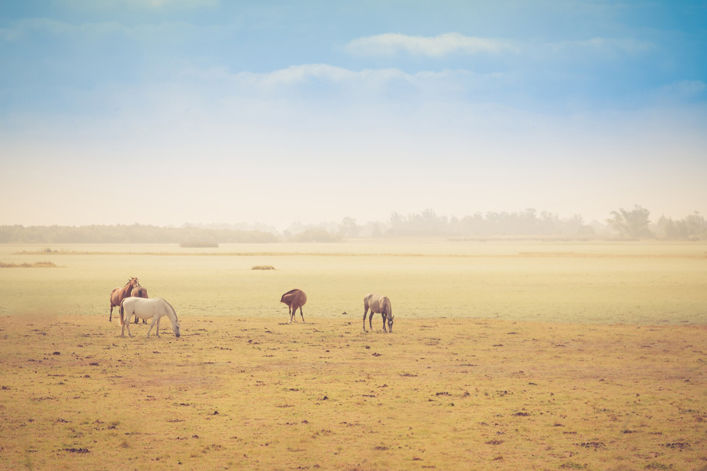
Tren minero junto al río rojo y la mina Peña de Hierro — un paisaje casi marciano. Vuelta a la marisma para la última cena tranquila.
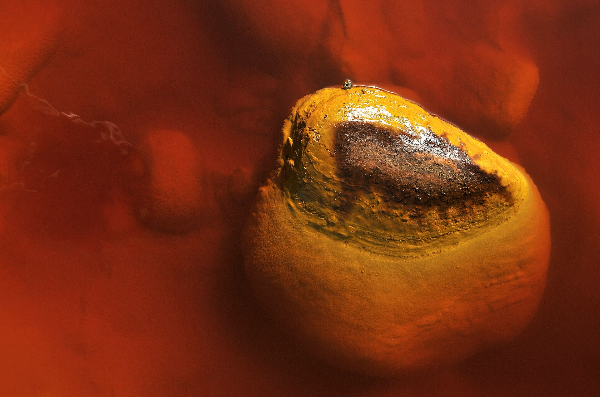
La Gruta de las Maravillas y un almuerzo de jamón en Jabugo antes de subir. La noche, por decidir abajo.
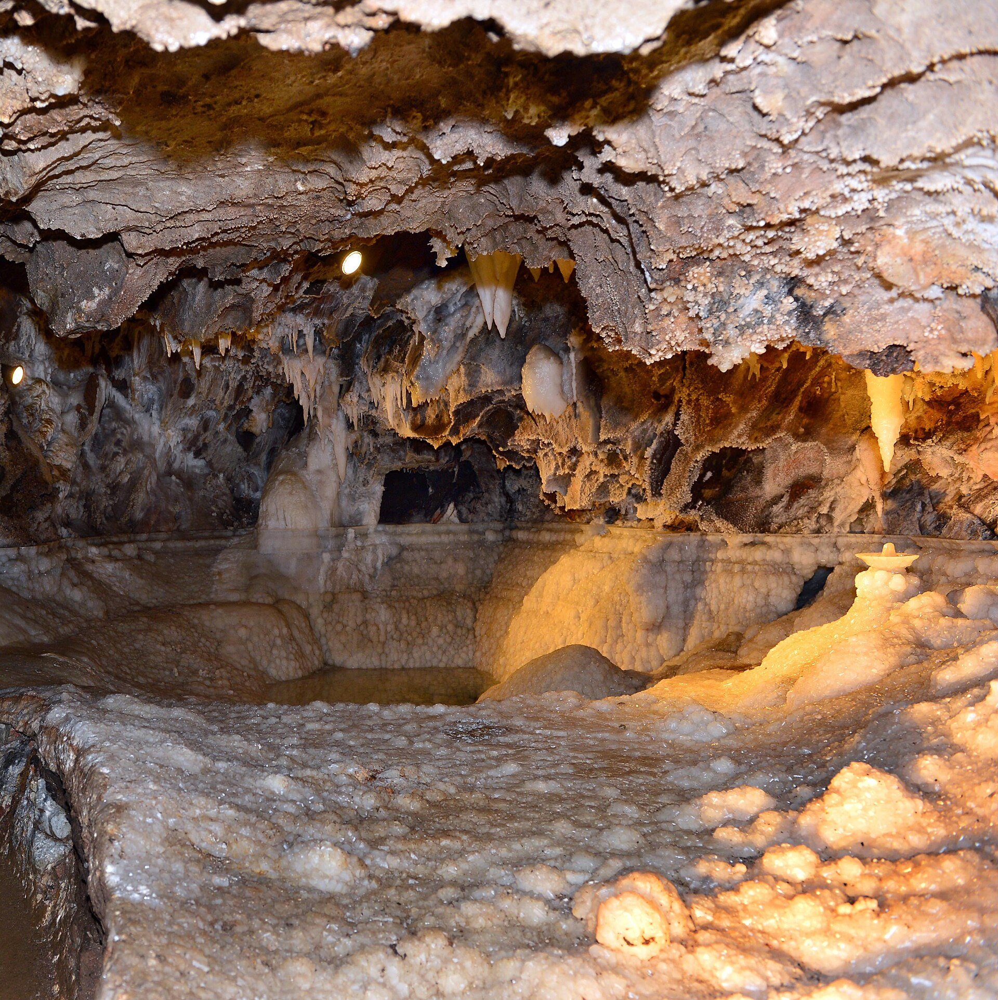
Última etapa hasta Cantabria. Empieza la semana en familia (8–14 ago).
◆ Casa de SuancesLa parada a mitad de camino entre Andalucía y Cantabria. Tres paradores y una sorpresa. Ese día ya lleva la Gruta de Aracena por la mañana, así que lo cómodo son ~4 h de coche por la tarde. Comenta en cada opción la que más te guste.
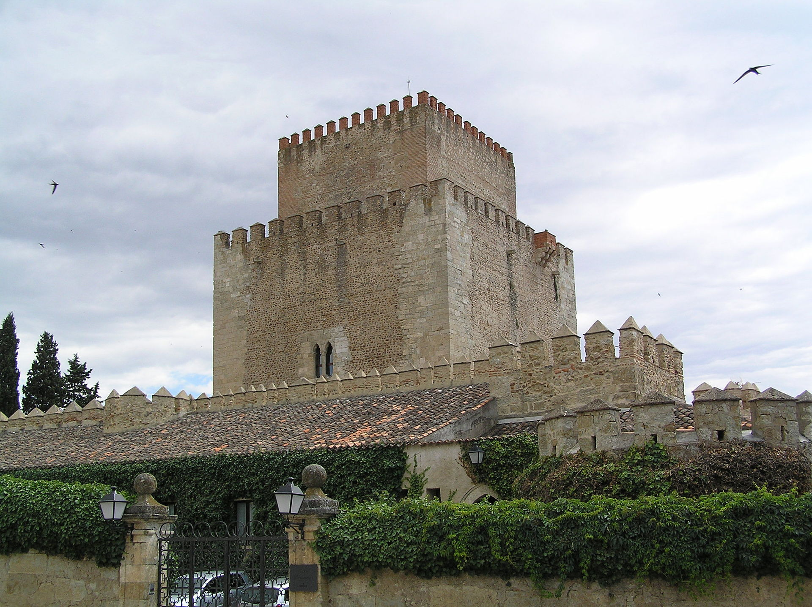
Parador⭐Dormir en un castillo de verdad sobre el río Águeda, en una ciudad amurallada pequeña y tranquila, junto a la Sierra de Francia.
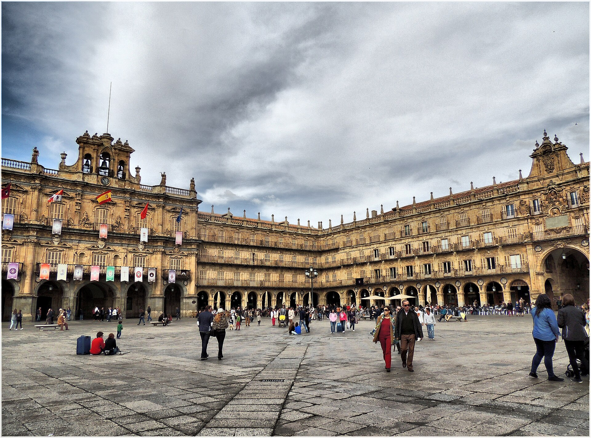
ParadorParador moderno con vistas a la ciudad. Atardecer paseando la Plaza Mayor y la catedral — un planazo con Leónidas.
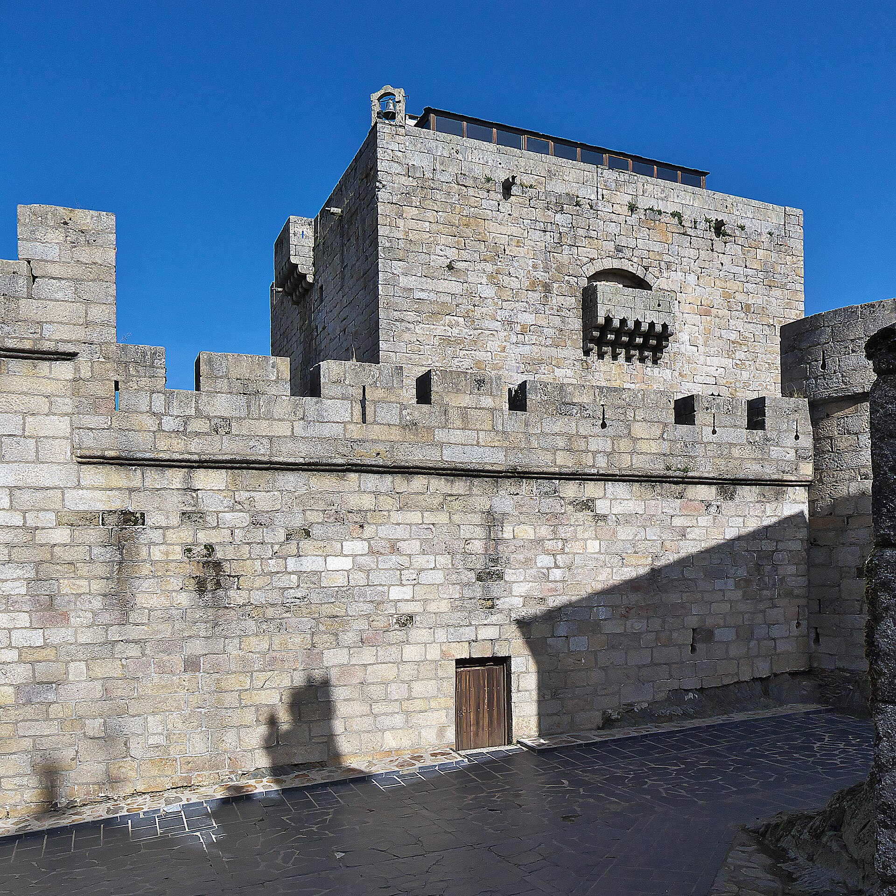
ParadorCastillo medieval y el mayor lago glaciar de Iberia para bañarse. El parador tiene jardín, piscina y zona de juegos infantil.
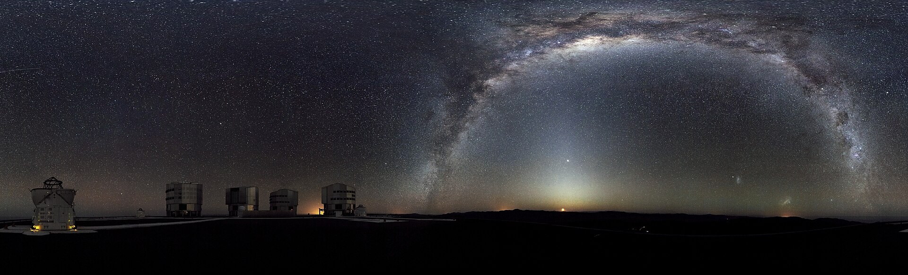
SorpresaUna burbuja con techo transparente para ver las estrellas desde la cama, en un cielo sin contaminación lumínica. Inolvidable para Leónidas.
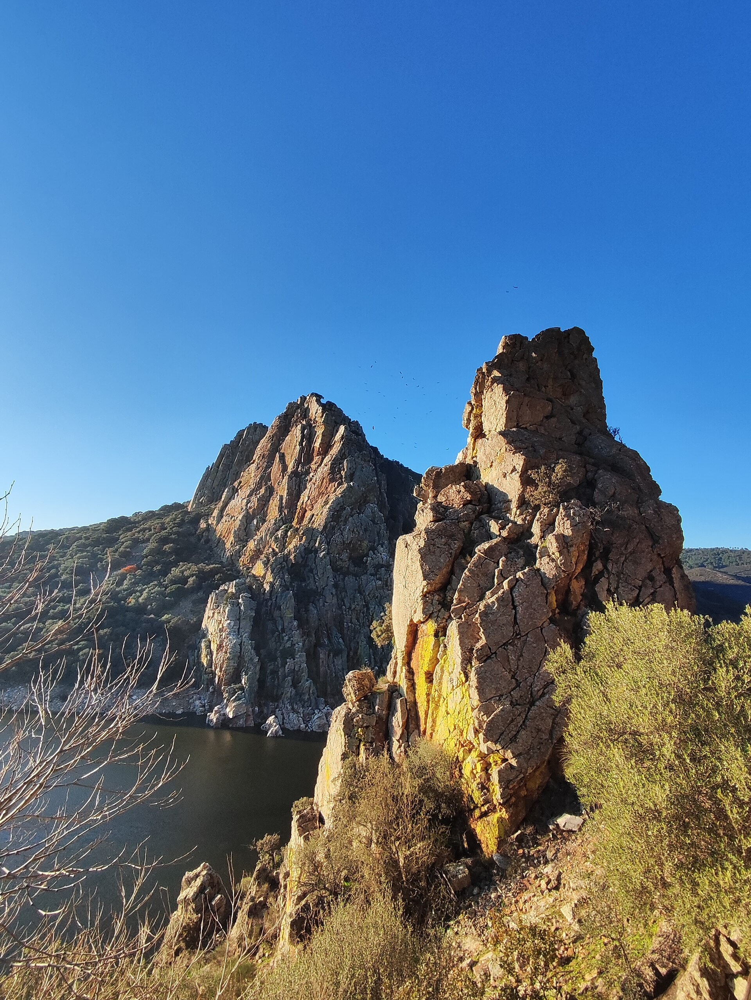
Para el astrónomoDuermes en el parador-convento de Plasencia y, a 35 min, una sesión nocturna guiada en el Observatorio de Monfragüe (cúpula de 4 m, cielo Starlight certificado). La opción hecha para tu afición — a cambio de un día 8 más largo.
👉 Julia, vota tu favorita comentando en su tarjeta (o propón otra). Mi apuesta es Ciudad Rodrigo — salvo que te tiente la de astronomía.
Reservar Albaida y Ardea en tarifa reembolsable mientras decidimos la noche del 7. Filtrar siempre 2 adultos + 1 niño. · Ver casa de Suances ↗
El 12 de agosto, ya en Suances, coinciden dos eventos que no se repiten juntos: un eclipse total de Sol al atardecer y, esa misma noche, el pico de las Perseidas con Luna nueva.
Toda Cantabria está en la franja de totalidad: ~1 min 30 s de noche en pleno día, con el Sol bajísimo (~10°) sobre el mar.
Noche del 12 al 13 con Luna nueva (0 %): cielo completamente negro y 60–100 meteoros/hora desde un sitio oscuro. Mejor a partir de medianoche.
La costa cantábrica es la zona de España con más riesgo de nubes (solo 30–50 % de cielo despejado). Condición innegociable: horizonte oeste despejado. La estrategia es ser móviles y decidir según la predicción — mirar AEMET y mapas de satélite a 48 h, 24 h y la tarde misma del 12; coche listo, depósito lleno y salir con mucha antelación (habrá tráfico masivo).
Eclipse total sobre el Cantábrico, escénicamente imbatible: el horizonte oeste es mar abierto. Solo si la predicción acompaña.
Valderredible (el Observatorio de Cantabria, páramo de La Lora a 1.080 m), Reinosa/Campoo o el Castillo de Aguilar de Campoo. Mejor cielo y totalidad algo más larga al acercarse a la línea central.
Si toda la cornisa amanece cubierta: tierra adentro el cielo sube al 50–70 % despejado y la totalidad es más larga (Burgos ~104 s). El plan B "de seguro".
Imprescindible: gafas de eclipse certificadas (ISO 12312-2) para la fase parcial; en la totalidad, a ojo desnudo. En posición antes de las 19:30. · El Observatorio de Cantabria organiza sesión especial de eclipse y de Perseidas: reservar cuanto antes ↗.
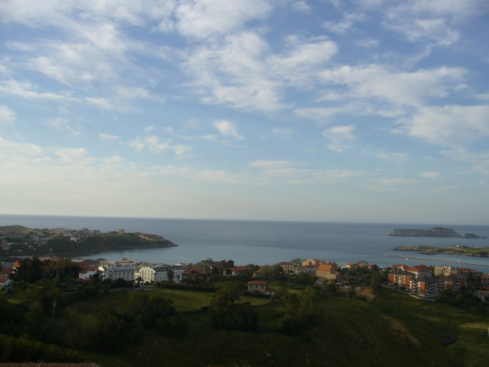
Una semana en Suances con la familia para cerrar el verano.
¡Hola, Julia! 💬 Aquí, para lo que no encaje en un día concreto: cambios, dudas o ideas sueltas. Para escribir solo tienes que iniciar sesión con una cuenta de GitHub (gratis y rápido). En cada día y cada opción de arriba tienes también su propio botón de “Anotar”.